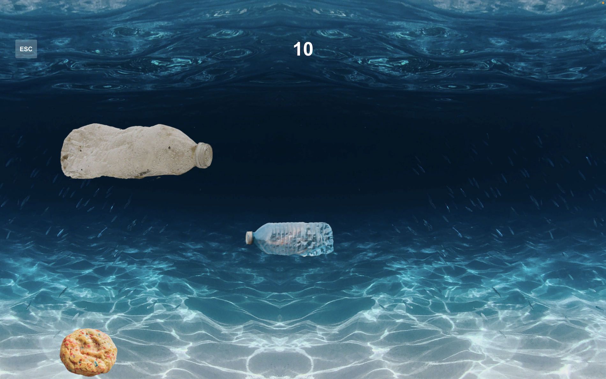
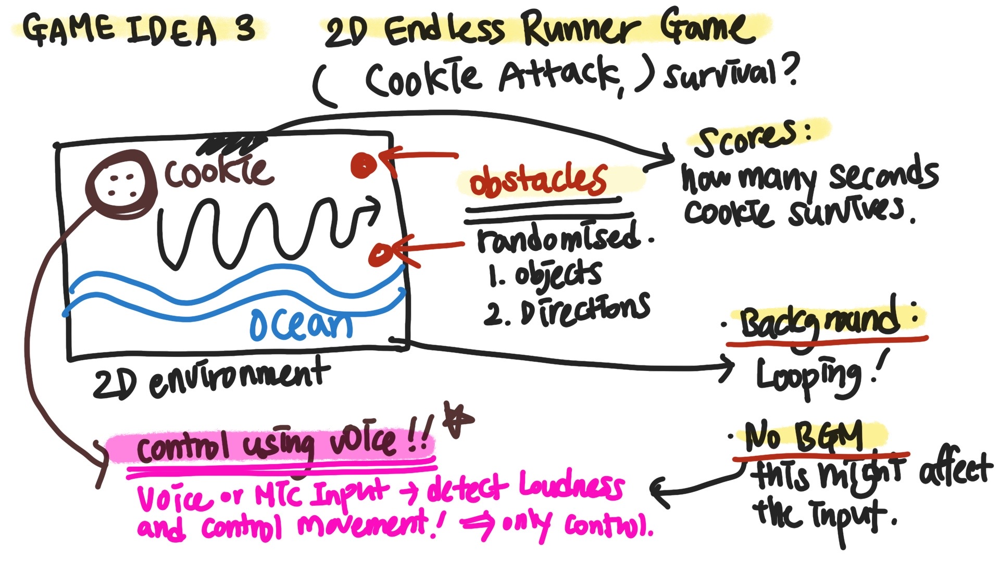
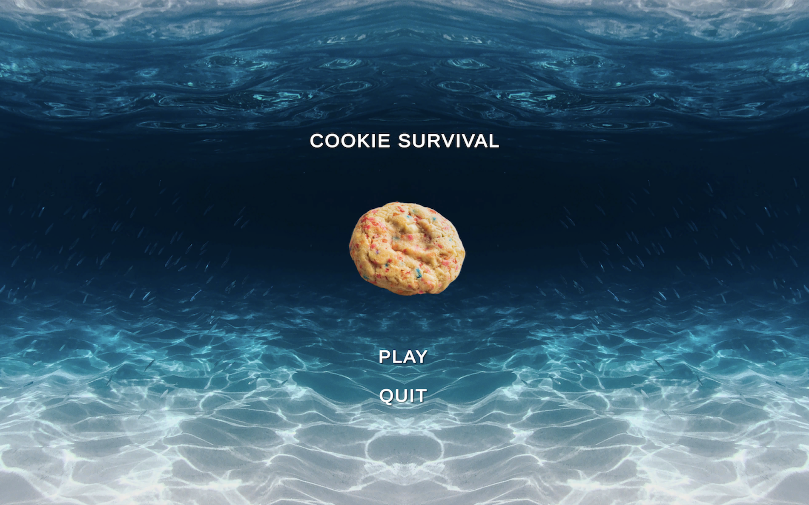

<!DOCTYPE html>

<html lang="en">
    
    <head>

        <meta charset="utf-8" name="viewport" content="width=device-width, initial-scale=1.0">
        <link rel="stylesheet" type="text/css" href="../style.css">
        <script type="module" src="../three.js" defer></script>

    

        <title>MINNIE PARK</title>

         <!-- Favicon -->
         <link rel="apple-touch-icon" sizes="180x180" href="../favicon/apple-touch-icon.png">
         <link rel="icon" type="image/png" sizes="32x32" href="../favicon/favicon-32x32.png">
         <link rel="icon" type="image/png" sizes="16x16" href="../favicon/favicon-16x16.png">
         <link rel="manifest" href="../favicon/site.webmanifest">


        <style>
            body {
                background-color: rgb(11, 103, 124);
                background-image: linear-gradient(to right, rgba(255, 255, 255, 0), rgb(0, 61, 111));
                background-image: cover;
                
            }
        </style>
        
    </head>

    <body>
        <header>
            <div id="header-section">
                <nav>
                    <ul>
                        <li><a href="../index.html"></a></li>
                    </ul>
                </nav>
                
                <audio id="bgm" src="../audio/cookie.mp3" autoplay loop ></audio>
                <script>
                    var bgm = document.getElementById("bgm");
                    bgm.volume = 0.5;
                    var musicPlay = document.getElementById("musicPlay");
                    musicPlay.onclick = function(){
                        if(bgm.paused){
                            bgm.play();
                            musicPlay.src="../img/musicnote.png";
                        } else {
                            bgm.pause();
                            musicPlay.src="../img/pause.png";
                        }
                    }
                </script>
            </div>
        </header>

    <!--  <h1 id="top"></h1>
        <br><br><br>
    <div class ="text-wrapper">
        <h2>WANNA PLAY THE GAME PREVIEW BELOW?</h2>
        <h2>WANNA PLAY THE GAME PREVIEW BELOW?</h2>
        <h2>WANNA PLAY THE GAME PREVIEW BELOW?</h2>
        <h2>WANNA PLAY THE GAME PREVIEW BELOW?</h2>
    </div> <br>

        <div id="embed">
            <video width="80%" height="80%" controls>
                <source src="../video/cookie.mp4" type=video/mp4>
              </video>    
        </div>

        <ul><li><a href="https://minniepark.itch.io/cookie-survival?secret=1T1UorcAiZu2yHlsF9v5oKRHLXM" target="_blank"><h4>DOWNLOAD LINK</h4></a></li></ul>

    <br><br><br><br><br><br><br>

<div class="contentBox" >
    <h3>WHAT IS IT?</h3>


   <br><br><br>

    <p >It's a survival game avoiding obstacles while controlling the game with your voice using a microphone 
        of your computer or laptop.</p><br>
    <p2> The Narrative of the game</p2>
       <p>is that Cookie went to Ocean for swimming on holiday and attacked by many plastics. 
        So we have to help Cookie to not bump into them by shouting to the screen. 
        The louder you shout, the higher Cookie can swim up. </p><br>
            
        <p2> COOKIE SURVIVAL</p2>
           <p>is therefore, a game which you help Cookie swim as long as possible while avoiding plastics 
            with the voice control.</p><br><br>
    
            
</div>
<div class="contentBox" >
    <h3>DESIGN APPROACH</h3>
    <br><br><br>
    <p2>Concept Design: Minimalist Game</p2>
    <p>Inspired by the endless runner game, cookie survival was designed with examining features of micro games: a time limit, simple goal and interaction, one control to play and the minimum instruction.  </p>
    </p><br>

    <p2>Technical Design: Voice Input System</p2>
    <p>
    To create a unique and fun experience, the microphone is used for the voice input system of Unity to play the game. It detects the loudness of the sound from the microphone built in the player’s computer and adjusts the power of the jumping movement of Cookie. 
    <br>
    The game is also designed with the random spawn obstacles scripted to appear randomly from random locations on the looping background. 
    </p><br>

    <p2>Why Cookie? Ocean? Plastics?</p2>
    <p>
    Simply, I love cookies. And just imagined my favourite cookie goes on a holiday to the ocean for swimming, just as how Olaf(a snowman) from Frozen wants to see the summer. After I decided to have a cookie as a player, I was thinking about many different places this cookie would want to go. I wanted to design a place which has more meaning than just fun. I've been interested in environmental issues, especially plastic trash in the ocean. I Wanted to talk about this issue in the game, which in fact the ocean is full of plastics and it's affecting us.
    <br><br>
    This time Cookie went to the ocean, but it can also go running on the street with heavy traffic where there are so much CO2 emission,  on the river stream where there's severe water pollution from factory's waste, on some countries where a mountain of electrical waste which causes the soil and air pollution, or North pole where there is massive iceberg melting. Who knows what’s next?
    </p><br>
    <br><br><br>
    <p2>Aesthetics, Colour Palette and Sound Design</p2>
    <p>
    All the design aspects are kept minimal in terms of use of colour, sound effects, interactive elements and graphics or visuals. The main colour of the game is ocean blue. All the UI elements as well as other visual elements in the game are carefully designed to maintain unified colour design. In this game, there is no background music applied in the game scene since it interferes with the voice input system, but some of the sound effects are added and the background music  is added in the intro and menu scenes.     <br><br>
    </p><br><br>


</div>

<div class="contentBox" >
    <h3>REFLECTION</h3><br>
    <p>
    I like this game. But I do think there are rooms to improve. Adjusting the right amount of all variables to get the proper power of jump and movement was definitely challenging, specially because the playing  environment is always different and the amount of noise or the ambient sound in the background always changes accordingly. 
    </p><br>
    <p>
    But I really enjoyed creating this game. This was actually the last game I built and after building all three games I really found myself enjoying every process of designing these games. And I realized you as a creator, should make games which you really enjoy playing that you have to make yourself as an audience first. When you do make a game which you really puts your heart in it, I think that is what really makes the game special and different.  There were a lot of times when I got frustrated and discouraged trying to figure out how to make the script work, but I think I've truly learned a lot from this assignment and I'm proud of myself putting this much of myself into creating these games.
</p><br><br>


</div><br>

<div class="bottomPage">
    <ul><li><a href="#top"></a></li></ul>
    <ul><li><a href="../index.html"></a></li></ul>
    <ul><li><a href="contact.html"></a></li></ul>
</div><br>
 -->


</body>

</html>

